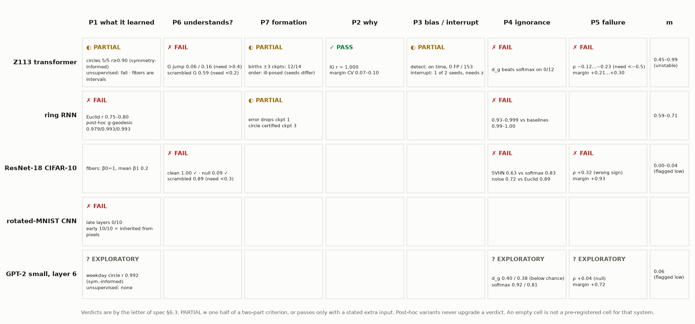
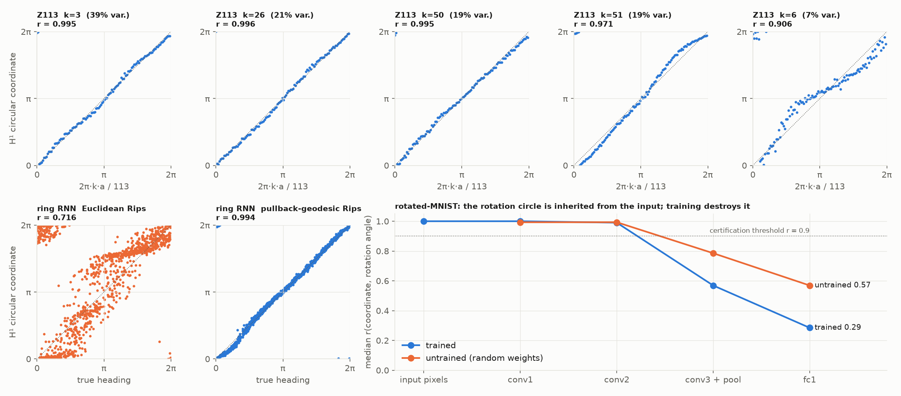
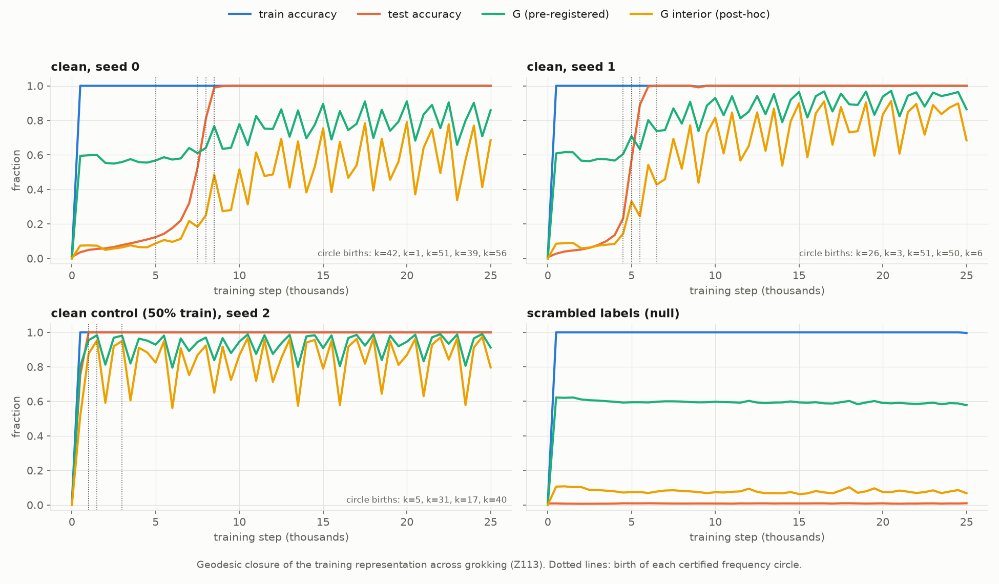
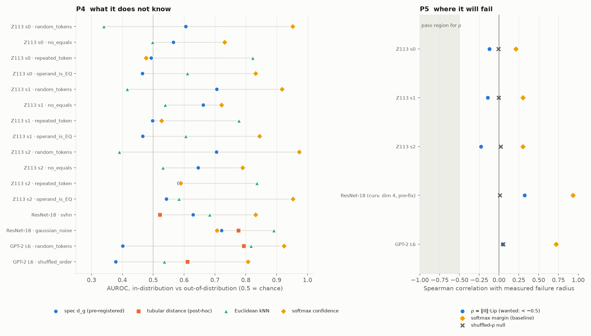
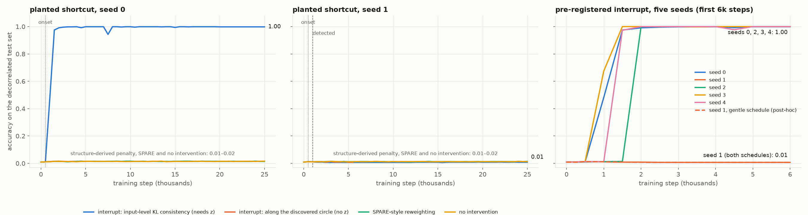

The specification proposed that a trained network is a sequence of Riemannian manifolds, and that seven questions about it — what it learned, whether it understands, why it decided, when bias entered, what it does not know, where it will fail, how it formed — each have a computable answer. It pre-registered pass criteria for every one. This is what happened when they were run.
By the letter of the pre-registration, most cells fail. Two pass outright (the geodesic explanation, and speed). Spurious-structure detection passes, including against a harder null added during the run. The training-time interrupt works on four of five seeds. Ignorance, failure prediction and the geodesic definition of understanding do not meet their criteria on any system.
The mathematics still found things that are true. The pullback metric is the right metric for the topology of a representation. Three of the specification's own ground truths turned out to be wrong, and in each case the framework measured the correct answer. And the most important negative: a detector built on cohomology can be evaded — a network under pressure destroyed the circle and kept the shortcut.
Every verdict below is scored against §6.3 of the specification as written. Anything introduced after seeing data is labelled post-hoc and sits beside the pre-registered number; it never replaces it.
| Cell | Criterion | Result | Verdict |
|---|---|---|---|
| P1 · Z113 | ≥3 of top-5 Fourier frequencies at r > 0.9; answer-fibers are circles | Frequencies 5/5 at r = 0.995, 0.996, 0.995, 0.971, 0.906 — with the group parameter supplied. Unsupervised Rips names nothing under either metric. Fibers: 0 circles in 20 fibers — correctly (they are intervals). | ◐ PARTIAL |
| P1 · ring RNN | One H¹ class; coordinate vs heading r > 0.99 | As registered (Euclidean Rips): r = 0.80 / 0.75 / 0.75. Post-hoc pullback-geodesic Rips: one class, r = 0.979 / 0.993 / 0.993 (network's own output: 0.983 / 0.993 / 0.989). | ✗ FAIL |
| P1 · rotated-MNIST | Rotation circle in ≥7/10 digit fibers | Late layers 0/10. conv1, conv2 10/10 — but raw pixels 10/10 and an untrained network 10/10. | ✗ FAIL |
| P6 · Z113 | G jumps > 0.4 within ±3 checkpoints of grokking; scrambled G < 0.2 | Jump 0.06 / 0.16; scrambled G = 0.59. Post-hoc interior-only G: jump 0.17 / 0.35, scrambled 0.076. | ✗ FAIL |
| P6 · ResNet-18 | Clean G > 0.9; scrambled < 0.3; shuffle null → chance | Clean 1.00; null 0.09; scrambled 0.89. | ✗ FAIL |
| P7 · Z113 | Frequency births within ±3 checkpoints of grokking; cross-seed order τ > 0.6 | Births: 12 of 14 within ±3. Order: not computable — the seeds learn different frequencies. | ◐ PARTIAL |
| P2 | Path-product / integrated-gradients r > 0.95; margin CV < 0.2 | r = 1.0000 on every input; CV 0.072 / 0.101 / 0.084. | ✓ PASS |
| P3 · detection | Onset within 5% of training; zero false positives on clean | Five seeds: 0–4% late. 0 flags in 153 clean checkpoints and 0 in 52 decoy-null checkpoints; 25/26 on each shortcut model. | ✓ PASS |
| P3 · interrupt | Within 2 points of clean on decorrelated test; beats no-intervention by > 10 points worst-group | 4 of 5 seeds: 0.01 → 0.998–1.000 (clean 1.000; no intervention 0.012–0.016; SPARE 0.014). Seed 1 never responds. | ◐ 4 / 5 |
| P4 | AUROC above softmax confidence and Euclidean kNN on both OOD sets | Beats softmax on 0 of 12 Z113 cells, 0 of 9 ring cells; ResNet 0.63 vs 0.83; GPT-2 0.40 and 0.38 — below chance. | ✗ FAIL |
| P5 | Spearman(ρ, failure radius) < −0.5; beats softmax margin | Z113 −0.12 / −0.14 / −0.23 (margin +0.21…+0.30); ResNet +0.32, wrong sign; GPT-2 +0.04. | ✗ FAIL |
| Speed | open() under 60 s per layer | 4.6 s (Z113) and 8.3 s (ResNet-18) on a quiet machine. | ✓ PASS |

The ring RNN integrates angular velocity; the only way to do that is to carry a heading around a circle. Yet Vietoris–Rips on its hidden states finds a thick blob, and the best H¹ coordinate tracks heading at r ≈ 0.75–0.80. The reason is that heading explains only half of the hidden state's variance (R² = 0.50–0.55); the rest is velocity history that the read-out never uses.
Measure the same cloud by geodesic distance on the graph weighted with g = JᵀJ — the distance the specification's object actually carries — and it becomes one circle: a single class 17–20× longer-lived than the next, whose coordinate tracks heading at 0.979 / 0.993 / 0.993. That is exactly the accuracy of the network's own output (0.983 / 0.993 / 0.989); on one seed the hidden-state coordinate is better than the output. The feature-shuffle null gives 0.01. The metric quotients out whatever the output does not read.
p1_inventory(metric='g')
The specification expected each answer-fiber {(a, c−a)} to be a circle parameterised by a. It is not, on any seed. The network is commutative at the layer we open: swapping the operands moves the representation by 0.3–0.8% of the fiber's radius. So inside a fiber every frequency k carries two counter-rotating phasors,
— a standing wave. The fiber's image in each frequency plane has axis ratio 0.016–0.025, a line segment; the same planes on the b = 0 slice, where nothing folds the orbit, give 0.996–0.999, a circle. The fiber is S¹ / (a ~ c−a): an interval. The pre-registered ground truth was wrong, and the instrument reported the right topology anyway.
The specification predicted that the geodesic from an input to the decision boundary would reach the neighbouring residue, c ± 1. It essentially never does (0%, 0%, 1.3% of 300 geodesics per seed). The nearest competing answer is the residue shift Δ that almost preserves every key-frequency phase at once — the minimiser of Σk vark(1 − cos 2πkΔ/113), computed from the P1 inventory alone. The top three predicted shifts contain 52% / 43% / 25% of geodesic destinations and 42% / 67% / 47% of logit runners-up; chance is 5%.
What P1 finds predicts where P2's boundaries are. The two notions of "competing answer" are also different objects: the geodesic destination equals the second-largest logit only 8–23% of the time.
Computed from training points only, the interior-only statistic sits at 0.06–0.09 through thousands of steps of perfect training accuracy, begins to rise as the frequency circles are born, and keeps rising for about ten checkpoints after test accuracy has saturated. The scrambled-label model never leaves 0.07. That is why it fails a criterion written as a jump.
After grokking it oscillates with period three checkpoints. The cause is the optimiser: training loss swings between 10⁻⁷ and 10⁻² while accuracy reads 1.00, and G falls at every spike (Spearman with training loss −0.51 / −0.54 / −0.60). It registers a disturbance of the representation that accuracy does not.

A rotation orbit is already a circle in pixel space, and it stays one through two convolutional layers of any network, trained or not — so finding it there says nothing about learning. After pooling, the trained network has erased it (median r 0.57, then 0.29) further than random wiring does (0.79, 0.57). The digit's fiber carries no rotation coordinate because the classifier quotiented it out: a learned invariance, read as an absence.
The manifold score is 0.06, so every answer is flagged low-confidence — the honesty mechanism doing its job. Intrinsic dimension is 12–16 of 768. The weekday circle is certified out-of-sample when the cyclic index is supplied (r = 0.992, lifetime ratio 25, null 0.005). Months give a plane whose angle tracks the month (0.97) without a clean H¹ coordinate (0.47). Unsupervised Rips finds neither.
The definition pushes the off-manifold displacement through the Jacobian of the remaining network. That deletes exactly the directions the head ignores — and an out-of-distribution input is displaced mostly along those. On GPT-2 the score is below chance (0.40 and 0.38): out-of-distribution points look closer than in-distribution ones. Measuring the same normal displacement in activation space instead (post-hoc) recovers 0.79 and 0.61, and still loses to softmax confidence and to entropy on every system tried.
A ResNet that memorised random labels scores G = 0.89 at its penultimate layer: memorisation also makes training points class-contiguous there. Forcing geodesics through unlabeled held-out inputs (post-hoc; no held-out label used) does not rescue the criterion. From layer 1 to the penultimate the clean network reads 0.99–1.00 and the memorising network 0.54 / 0.55 / 0.60 / 0.86 / 0.88, against a label-permutation null of 0.10.
There is a circularity underneath. A metric derived from the output makes "near" mean "same output", so a geodesic between two same-output points that runs through same-output points is close to a tautology. The two networks do separate — most at early layers, least at the last — and the number of connected components of a class fiber separates them more cleanly than G does (1.0–1.2 against 7.9–9.1).
As a label-free tracker of test accuracy across 68 Z113 checkpoints, the amended statistic ties mean softmax confidence in rank (Spearman 0.837 vs 0.836), is more linear (0.85 vs 0.65) and is a worse estimator (mean absolute error 0.38 vs 0.27).
The test suite found that the curvature fit used tangent dimension 4 regardless of the manifold. With that fixed, ρ = ‖II‖·Lip correlates with measured failure radius with the predicted sign on all three Z113 seeds (p < 10⁻⁴, shuffled null 0) — at a fifth of the required strength, below the softmax margin, and absent on a second probe of the same model (+0.02). On ResNet-18 the sign is wrong (+0.32; ρ is anti-predictive of errors). On GPT-2 it is null. A margin measured along the manifold does better (+0.84 on ResNet) and still loses to the softmax margin (+0.93).

Detection is the strong half. On five seeds the planted shortcut takes hold by step 500 and is flagged at step 500, 1000, 1500, 500 and 1000 — never more than 4% of training late. Clean models are never flagged. Neither are decoy models, a harder null added during the run in which the hint token appears just as often but carries nothing: the network ignores it entirely, and no circle forms.
The intervention that removes the shortcut — one round at λ = 3 takes decorrelated accuracy from 0.01 to 1.00 on four of five seeds, where SPARE-style reweighting leaves it at 0.01 — is a symmetric-KL consistency loss across hint values on random inputs. It has to be told which input token the nuisance is. Anyone who knows that can apply it without any topology. Seed 1 never responds and collapses under escalation, under both the registered schedule and a gentler post-hoc one; seed 2 was detected later and recovered, so lateness is not the cause. It is unexplained.
The specification's penalty taken literally — invariance along the discovered circle at the layer, with no knowledge of the input — was then implemented and run. It destroyed the circle and left the shortcut fully intact. For three consecutive checkpoints the detector reported zero spurious classes on a model with shortcut reliance 1.000 and decorrelated accuracy 0.014. The network had re-encoded the hint in a form that is not a circle.
Detection by H¹ can be evaded by re-encoding. Any monitor of this kind that is also used as a training signal should be assumed to have this failure mode.

whiteboxtopo implements every function the specification lists, plus what the run showed was needed: pullback-geodesic persistence, a symmetry-informed inventory, a Jacobian-free secant metric for layers too wide to differentiate, and an ambient tubular distance. 143 unit tests on synthetic manifolds with analytic ground truth pass; one documented limitation remains (the local dimension estimate at k = 15 over-reads a noisy circle as 2.3). The suite caught three real bugs mid-run, all fixed, with pre-fix outputs kept beside the new ones.
open(Z113 transformer, grokked, seed 1) probe extraction 0.9 s
layer resid_mid manifold score m = 0.77
P1 beta0=1; 70 persistent H1 classes, none named
with the task symmetry supplied: circles at frequency 3 (r=0.995, 39% var), 26 (0.998, 21%),
50 (0.995, 19%), 51 (0.969, 19%), 6 (0.903, 7%)
P6 G = 0.864 (interior-only 0.687); mean beta0 of a fiber = 1.08
P2 input 0: predicted 16, nearest other answer 55 at manifold margin 141.6
P4 random_tokens AUC 0.664 (softmax 0.942, euclid 0.401, tubular 0.604)
P5 Spearman(rho, failure radius) = 0.018 (p=0.57); softmax margin 0.306
P7 [bundle] circles born at checkpoints 9-13; grokking at checkpoint 10
P3 [bundle] 0 spurious classes over 153 clean checkpoints; shortcut flagged at steps 500, 1000
total wall time 4.6 s
open(ResNet-18 / CIFAR-10, clean) probe extraction 2.0 s
layer penultimate manifold score m = 0.00 [LOW MANIFOLD SCORE -- answers not trustworthy]
P6 G = 1.000; mean beta0 of a fiber = 1.00
P4 svhn AUC 0.632 (softmax 0.847, euclid 0.667); gaussian_noise 0.730 (softmax 0.732, euclid 0.892)
total wall time 8.3 sAbridged from logs/demo_transcript.txt. The one-minute demo returns in seconds; what it returns is only as good as the definitions above.
The first session died at 00:56 when its terminal tab closed, taking two analyses with it; two jobs launched under systemd survived. The second session rebuilt state from the transcript at 01:07. Three jobs were then OOM-killed because too many CUDA processes were started at once on a 30 GB machine; each was rerun to completion through a single sequential queue. Nothing was lost. Nothing is committed to git; two snapshots are in ~/blindinglight_backups/.
A decoy-hint null for P3. Pixel and untrained-network controls for rotated-MNIST. Three extra interrupt seeds and a gentler schedule. The structure-derived penalty. Commutativity, boundary-shift and label-free-accuracy tests on Z113. ResNet analysed through depth. A full unit-test suite. Each came from following a number that did not make sense.
| What | Where (under ~/blindinglight) |
|---|---|
| Scorecard, findings, number-to-file map | CLAIMS.md |
| Chronological log | RUNLOG.md |
| Figures | figures/ — grid, grokking, inventory, interrupt, p4_p5 |
| Demo transcript | logs/demo_transcript.txt · python analysis/demo.py |
| Library and tests | whiteboxtopo/ · tests/ · python -m pytest tests -q |
| Experiments | analysis/ (one script each) · systems/ · results in results/ and runs/*/ |
| Specification | docs/WHITEBOX_Final_10hr_Specification.pdf |